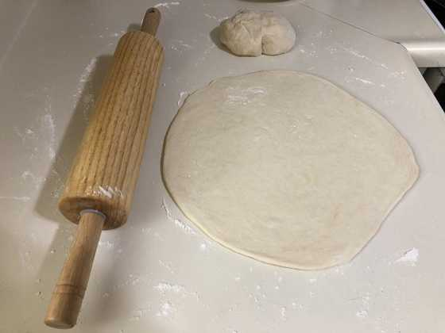
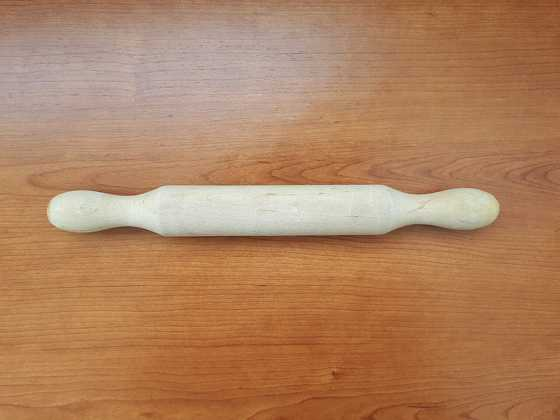
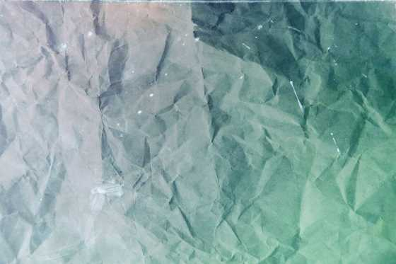
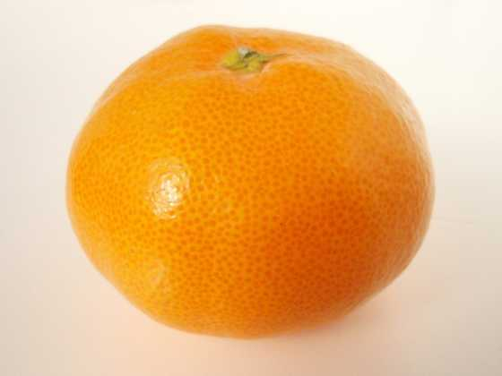
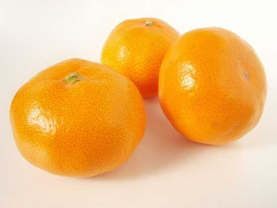
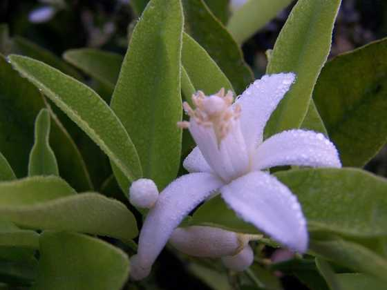

ヒーロー背景: 2020-05-08 19 00 51 Dough and a rolling pin in the Franklin Farm section of Oak Hill, Fairfax County, Virginia / Famartin / CC BY-SA 4.0 / 出典(Wikimedia Commons)
お店の由来・想い
- 茨城県行方市井上にあるテイクアウト専門のクレープ店です。
- 千葉県を中心に展開する「ヤマグチクレープ」の加盟店として、2026年にオープンしました。
- 店舗紹介には「自宅庭の店舗でクレープを焼いています。大きなクスノキがお出迎え。霞ケ浦を眺めながらクレープをどうぞ」とあります。駐車場あり。
- 生地には国産の農薬不使用小麦粉と国産全粒粉を使い、インドの澄ましバター「ギー」を配合。注文を受けてから一枚ずつ焼き上げ、端はパリッと、中はもちっとした食感だと紹介されています。
店名の由来やオーナーさんの想いは確認できていないため、ここでは触れていません。

口コミ
以下は制作側が作成したイメージで、実在のお客様の声ではありません。
イメージ例
生地がパリッともちっとしていて、何も付けないシュガーバターが好きになりました。
イメージ例
庭先で焼いてもらうのを待つ時間も楽しい。受け取ってすぐ、焼きたてをほおばりました。
イメージ例
ホントノチョコのカスタードがしっかり甘く、散歩の途中にまた寄りたくなる一軒です。
イメージ写真
掲載の写真はフリー素材のイメージであり、店舗の実際の様子や商品ではありません。実際の写真はご提供いただいたものに差し替えます。







